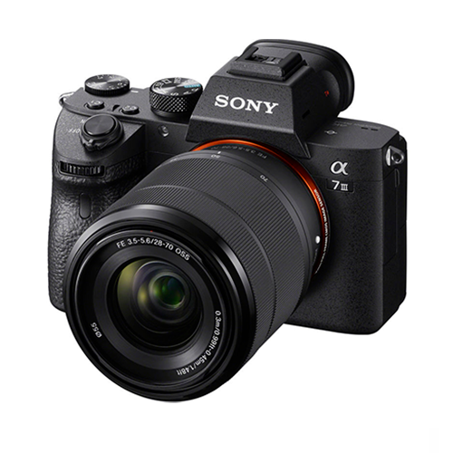
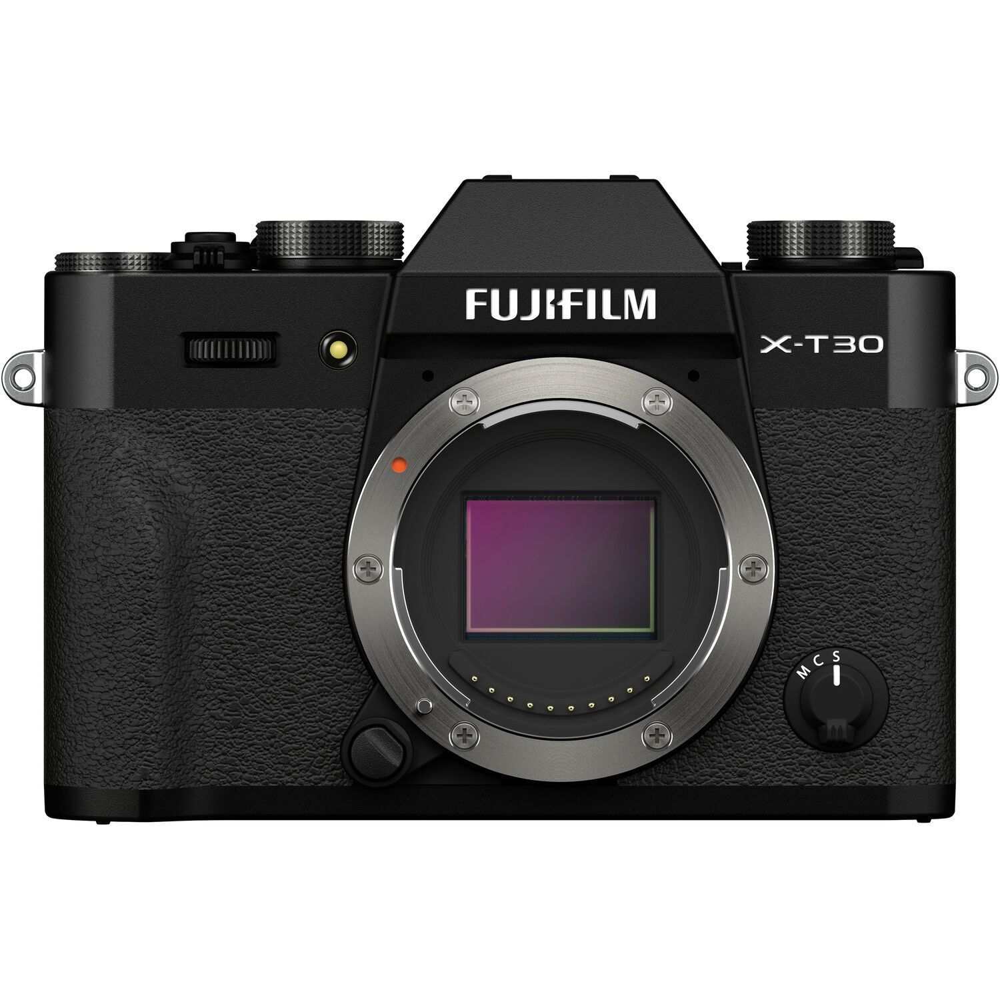

Сучасна фотографія використовує різноманітні типи фотокамер:
| Canon EOS R6 | Nikon D7500 | Sony Alpha 7 III | Fujifilm X-T30 |
|---|---|---|---|
|
|
 |  |
| Canon EOS R6 | Nikon D7500 | Sony A7 III | Fujifilm X-T30 |
| Повнокадрова бездзеркальна камера для профі з чудовою стабілізацією. | Потужна дзеркалка для ентузіастів із відмінним автофокусом. | Універсальна камера з високою якістю зображення і 4K відео. | Легка і стильна бездзеркалка для тревел-фотографії. |
| Камера | Характеристики | |
| Матриця | colspan="2"> Об'єктив, 50mm | |
| Canon EOS | 24MP | |